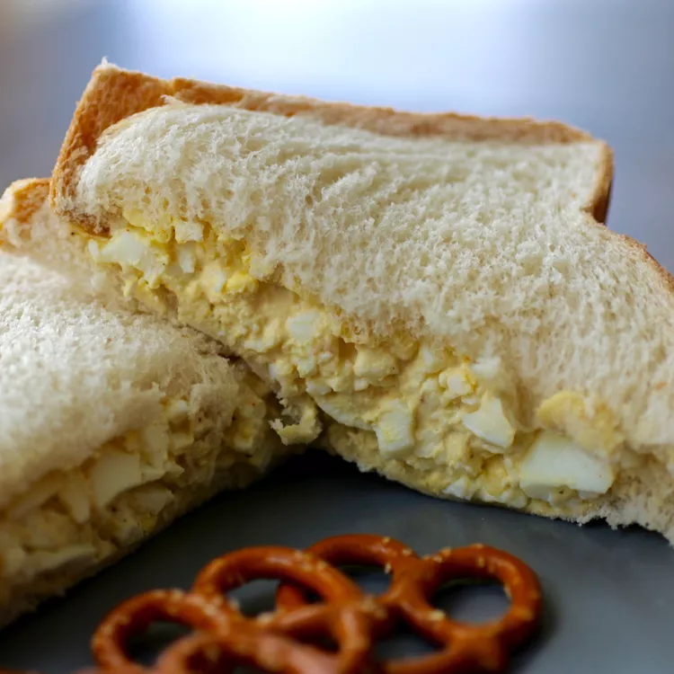

Home
Egg salad sandwich

Description
This egg salad tastes wonderful in a sandwich and will definitely be devoured! It's really good on rye.
Ingredients
- 8 eggs
- 1/2 cup mayonnaise
- 1/4 cup chopped green onion
- 1 teaspoon prepared yellow mustard>
- 1/4teaspoon paprika
- salt and pepper to taste
Steps
-
Place eggs in a saucepan and cover with cold water. Bring water to a boil and immediately remove from heat.
Cover and let eggs stand in hot water for 10 to 12 minutes. Remove from hot water, cool, peel, and chop.
-
Place chopped eggs in a bowl; stir in mayonnaise, green onion, and mustard.
Season with paprika, salt, and pepper. Stir and serve on your favorite bread or crackers.